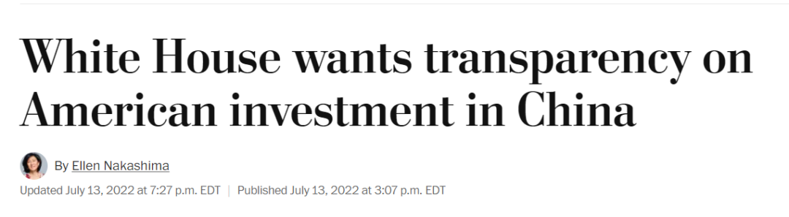
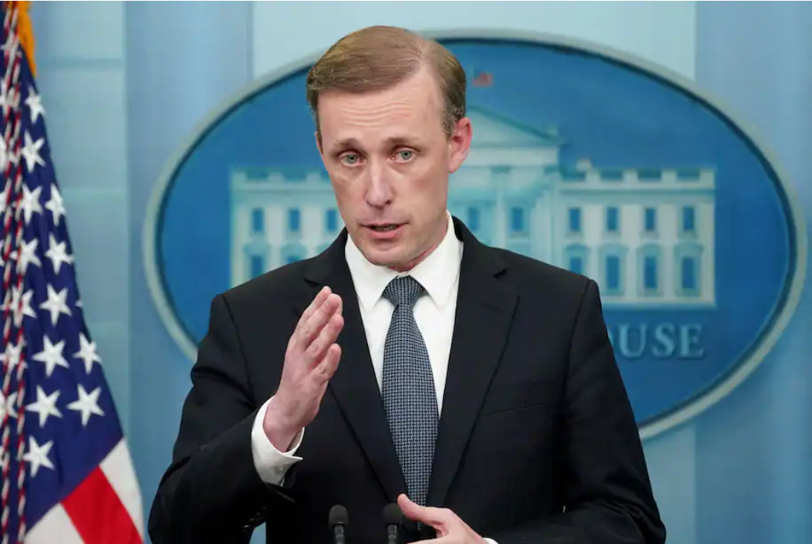

据美国《华盛顿邮报》13日报道，经过一年多的辩论，白宫首次回应2021年美议员提出的“国家关键能力防御法案”。
美国总统国家安全顾问沙利文在声明中表示，对于美国会要求提高美企在对华及其他受关注国家的“关键领域”上的投资透明度，白宫表示支持，以防“这些交易削弱美国的技术优势或破坏供应链的韧性，最终损害美国国家安全”。

报道称，白宫已就相关议案达成共识，对有可能“破坏国家安全”的部分领域投资进行限制甚至禁止。美国担心此类投资或有助于中国掌握关键技术后削弱美国，使美国处于更加依赖中国商品的危险境地。
此前，美国政府对有可能“损害国家安全”的对美投资进行了审查，两院还起草了一份名为“国家关键能力防御法案” （National Critical Capabilities Defense Act，NCCDA）的提案。这被美中贸易全国委员会批评为“美国250年历史上前所未有的措施”，增加了更多的不确定性，会损害美国的竞争力。
法案的起草者声称，该法案对于保障美国的就业和防止中国在新兴技术领域超越美国至关重要。

《华盛顿邮报》披露，该草案要求美国公司公布对华关键领域投资计划，包括半导体、量子技术、人工智能、关键矿物和材料以及大容量电池等。
同时，该法案还有望扩大总统权力，授权总统将其认为是“国家关键能力”的“任何其他领域”纳入被审查的范畴。
法案的提出者、参议院财政委员会成员、民主党籍参议员鲍勃·凯西说：“从口罩、呼吸机到计算机芯片，疫情让人们看到了美国供应链的脆弱，当我们向中国出口美国的专业知识和技术诀窍时，我们正在将制造能力拱手让给外国对手，损害美国的家庭和经济。”
但该议案也面临来自共和党人和商界的阻力，他们认为这将损害美国的竞争力。
美国商会负责国际政策的高级副总裁约翰·墨菲批评说，“美国政府或会开始审查企业的投资方式和投资地点，这令人担忧。对于在全球开展业务的企业来说，这可能是一套前所未见的繁重限制。”
美国咨询机构荣鼎集团的报告也印证了墨菲的观点，报告显示，如果法案通过，2000年至2019年期间美国对中国的外商直接投资（FDI）中，高达43%的投资将因该法案而受到审查。
还有参议员批评称，该法案缺少关于立法的公开听证环节，并担心该法案可能扰乱投资贸易的自由性，从而带来经济增长放缓和CPI进一步上涨的风险。
中国驻美大使馆发言人此前表示，“该法案泛化国家安全概念，滥用国家权力。它严重违背了美方声称重视的市场及其它国际经济和贸易规则。”
外交部发言人汪文斌5月17日也表示，中方一贯反对美方泛化国家安全概念、滥用国家力量无理打压特定国家和企业的做法。美方做法损害全球产业链供应链安全，注定损人不利己。